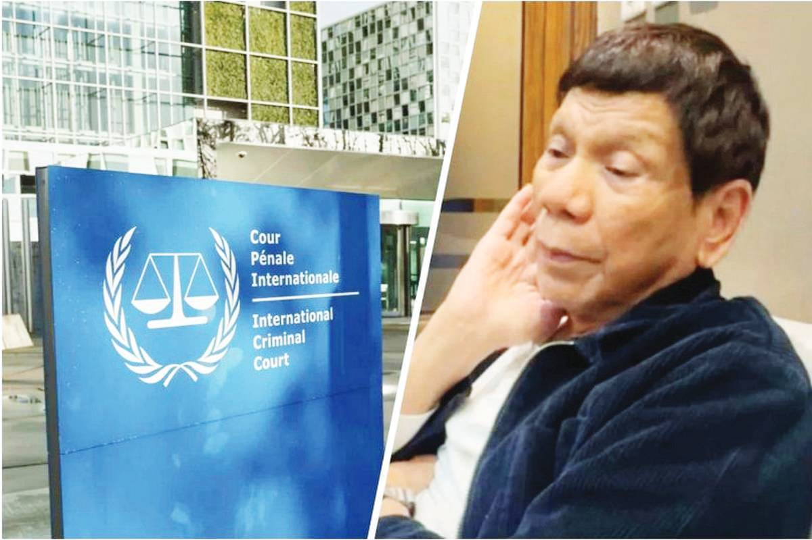

DUTERTE MEMORY LOSS
Duterte, currently 80, was apprehended and taken to “The Hague” on an arrest warrant that attached him to deaths during his “war on drugs” where thousands of alleged narcotics peddlers and users were killed.
“Mr. Duterte is not fit to stand trial as a result of cognitive impairment in multiple domains. Mr. Duterte’s condition will not improve and, for this reason, the Pre-Trial Chamber must adjourn all legal proceedings in his case indefinitely,” Kaufman said.
The ICC Prosecutor and legal representatives for the victims have generally opposed this indefinite adjournment request, questioning the defense's medical conclusions.
The court has consequently postponed confirmation of charges hearings to formally address the defense's petition and is considering having its own medical expert assess Duterte's health.
The families of the drug war victims have cited "conflicting narratives" about his health, pointing to public statements from his children suggesting he remains in good condition.
A decision from the ICC on whether Duterte is medically fit to stand trial is anticipated to be released in the coming weeks.